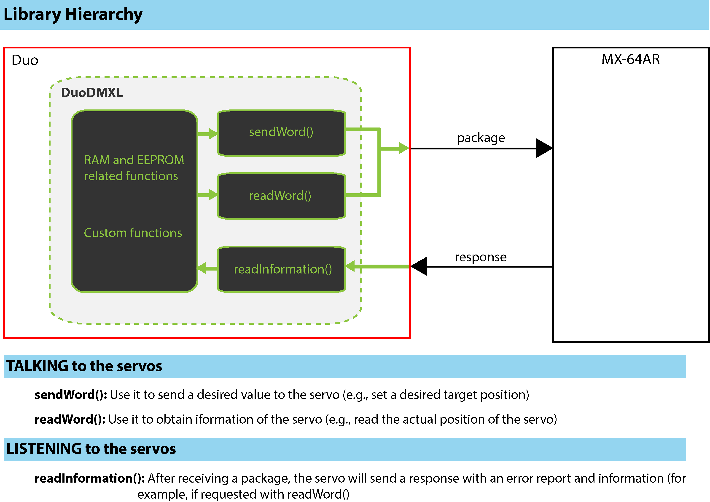
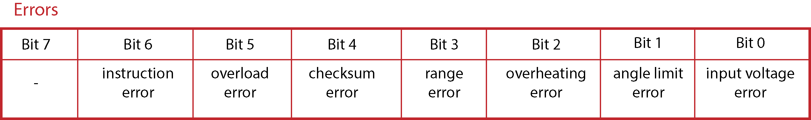
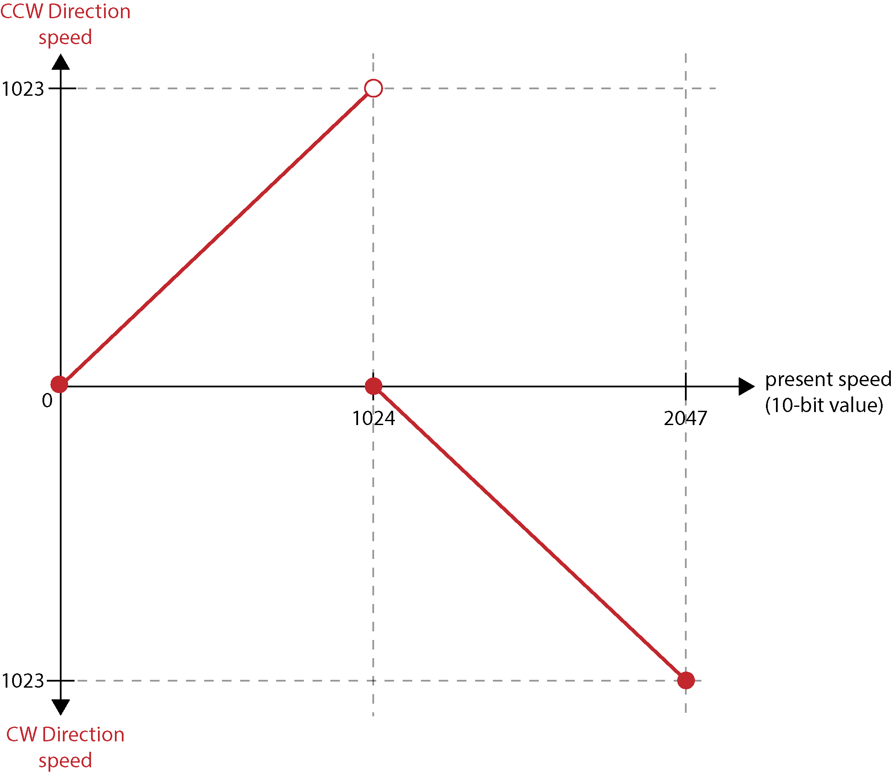

Basic functions
This set of functions are intended to work behind the scenes. In other words, the user should not have to worry about them. They deal with low-level communication and are called by other functions.
int DynamixelClass::readInformation(void)
| Information | |
|---|---|
| Description | General function to read the status package from a servo. It then extracts the error (if any) or desired data (for example, if the current positon of a servo was requested) |
| Notation | Private function. Not available to the user |
| Parameters | None |
| Returns | A number representing an error or data |
int DynamixelClass::sendWord(uint8_t ID, uint8_t address, int param, int noParams)
| Information | |
|---|---|
| Description | Function to set the value of a servo's address. noParams should be ONE_BYTE or TWO_BYTES, depending on how many bytes we need to send |
| Notation | Dynamixel.sendWord(ID, address, param, noParams) |
| Parameters | uint8_t ID: ID of the servo |
| uint8_t address: Address to write to. | |
| int param: Value to write to the servo's address | |
| int noParams: Number of bytes to write (one or two bytes) | |
| Returns | A number representing an error (if any) |
int DynamixelClass::readWord(uint8_t ID, uint8_t address, int noParams)
| Information | |
|---|---|
| Description | Function to read the value of a servo's address. noParams should be ONE_BYTE or TWO_BYTES, depending on how many bytes we need |
| Notation | Dynamixel.readWord(ID, address, noParams) |
| Parameters | uint8_t ID: ID of the servo |
| uint8_t address: Address to read from. | |
| int noParams: Number of bytes to read (one or two bytes) | |
| Returns | A number representing an error (if any) or the desired data |
For example, to change the ID of a servo, a new ID should be written to the register's address 0x03. This can be accomplished quickly and cleanly with the following code:
int DynamixelClass::setID(uint8_t ID, uint8_t newID){
return(sendWord(ID, EEPROM_ID, newID, ONE_BYTE));
}
This should make it easier for the user to write custom functions. The hierarchy of the library is shown (simplified) in the following picture.

Functions related to the EEPROM area of the servos
void DynamixelClass::begin(long baud, uint8_t directionPin)
| Information | |
|---|---|
| Description | Initialize communication with the servos with a user-defined pin for the data direction control |
| Notation | Dynamixel.begin(baud, directionPin) |
| Parameters | long baud: Desired baudrate for communication with the servos. For MX-64AR the default baudrate is 1Mbps (if I remember correctly) |
| uint8_t directionPin: direction used for flow control. | |
| Returns | Nothing |
void DynamixelClass::begin(long baud)
| Information | |
|---|---|
| Description | Initialize communication with the servos with a pre-defined pin (D15) for the data direction control |
| Notation | Dynamixel.begin(baud) |
| Parameters | long baud: Desired baudrate for communication with the servos. |
| Returns | Nothing |
void DynamixelClass::end()
| Information | |
|---|---|
| Description | End communication with the servos |
| Notation | Dynamixel.end() |
| Parameters | None |
| Returns | Nothing |
int DynamixelClass::readModel(uint8_t ID)
| Information | |
|---|---|
| Description | Function to read the servo model. EEPROM Address 0(x00) and 1(0x01) |
| Notation | model = Dynamixel.readModel(ID) |
| Parameters | uint8_t ID: ID of the servo |
| Returns | ID of the servo |
int DynamixelClass::readFirmware(uint8_t ID)
| Information | |
|---|---|
| Description | Function to read the version of the firmware. EEPROM Address 2(0x02) |
| Notation | fw = Dynamixel.readFirmware(ID) |
| Parameters | uint8_t ID: ID of the servo |
| Returns | Number representing the firmware version of the servo |
int DynamixelClass::setID(uint8_t ID, uint8_t newID)
| Information | |
|---|---|
| Description | Function to set the ID of the servo. EEPROM Address 3(0x03) |
| Notation | Dynamixel.setID(ID, newID) |
| Parameters | uint8_t ID: Current ID of the servomotor |
| uint8_t newID: New ID of the servomotor | |
| Returns | Number representing an error (if any) |
int DynamixelClass::readID(uint8_t ID)
| Information | |
|---|---|
| Description | Function to read the ID of the servo. EEPROM Address 3(0x03) |
| Notation | id = Dynamixel.readID(ID) |
| Parameters | uint8_t ID: Current ID of the servomotor |
| Returns | Current ID of the servo |
int DynamixelClass::setBD(uint8_t ID, long baud)
| Information | |
|---|---|
| Description | Function to set baudrate. EEPROM Address 4(0x04) |
| Notation | Dynamixel.setBD(ID, baud) |
| Parameters | uint8_t ID: Current ID of the servomotor |
| long baud: Desired baudrate for communication. Up to 1Mbps (use 1000000) is officially supported by the servos. This functions truncates the number so there may be a small error on the final value. | |
| Returns | Number representing an error (if any) |
int DynamixelClass::setBDTable(uint8_t ID, uint8_t baud)
| Information | |
|---|---|
| Description | Function to set baudrate based on the manual's table. EEPROM Address 4(0x04). This is a more precise value. For example, for communication at 57600 bps use '34'. |
| Notation | Dynamixel.setBDTable(ID, baud) |
| Parameters | uint8_t ID: Current ID of the servomotor |
| uint8_t baud: Number from 0 to 255 representing a desired baudrate for communication | |
| Returns | Number representing an error (if any) |
int DynamixelClass::readBD(uint8_t ID)
| Information | |
|---|---|
| Description | Function to read the setting of the baudrate. EEPROM Address 4(0x04) |
| Notation | baudrate = Dynamixel.readBD(ID) |
| Parameters | uint8_t ID: Current ID of the servomotor |
| Returns | Number from 0 to 255 representing the baudrate currently being used |
int DynamixelClass::setRDT(uint8_t ID, uint8_t RDT)
| Information | |
|---|---|
| Description | Set the Return Delay Time (RDT) in microseconds. EEPROM Address 5(0x05) |
| Notation | Dynamixel.setRDT(ID, RDT) |
| Parameters | uint8_t ID: Current ID of the servomotor |
| uint8_t RDT: Desired RDT value | |
| Returns | Number representing an error (if any) |
int DynamixelClass::readRDT(uint8_t ID)
| Information | |
|---|---|
| Description | Read the Return Delay Time (RDT) value. EEPROM Address 5(0x05) |
| Notation | rdt = Dynamixel.readRDT(ID) |
| Parameters | uint8_t ID: Current ID of the servomotor |
| Returns | Current value of RDT |
int DynamixelClass::setCWAngleLimit(uint8_t ID, int limit)
| Information | |
|---|---|
| Description | Set the value for the CW Angle limit. EEPROM Address 6(0x06) and 7(0x07) |
| Notation | Dynamixel.setCWAngleLimit(ID, limit) |
| Parameters | uint8_t ID: Current ID of the servomotor |
| int limit: Desired limit | |
| Returns | Number representing an error (if any) |
int DynamixelClass::readCWAngleLimit(uint8_t ID)
| Information | |
|---|---|
| Description | Read the value for the CW Angle limit. EEPROM Address 6(0x06) and 7(0x07) |
| Notation | cwLimit = Dynamixel.readCWAngleLimit(ID) |
| Parameters | uint8_t ID: Current ID of the servomotor |
| Returns | Angle being used for clockwise limit of the servo |
int DynamixelClass::setCCWAngleLimit(uint8_t ID, int limit)
| Information | |
|---|---|
| Description | Set the value for the CCW Angle limit. EEPROM Address 8(0x08) and 9(0x09) |
| Notation | Dynamixel.setCCWAngleLimit(ID, limit) |
| Parameters | uint8_t ID: Current ID of the servomotor |
| int limit: Desired limit | |
| Returns | Number representing an error (if any) |
int DynamixelClass::readCCWAngleLimit(uint8_t ID)
| Information | |
|---|---|
| Description | Read the value for the CCW Angle limit. EEPROM Address 8(0x08) and 9(0x09) |
| Notation | ccwLimit = Dynamixel.readCCWAngleLimit(ID) |
| Parameters | uint8_t ID: Current ID of the servomotor |
| Returns | Angle being used for counter-clockwise limit of the servo |
int DynamixelClass::setTempLimit(uint8_t ID, uint8_t Temperature)
| Information | |
|---|---|
| Description | Set the limit temperature. EEPROM Address 11(0x0B) |
| Notation | Dynamixel.setTempLimit(ID, Temperature) |
| Parameters | uint8_t ID: Current ID of the servomotor |
| uint8_t Temperature: Temperature that will be set as limit. The servo will shutdown if this temperature is reached. Documentation suggests not modifying the default value. | |
| Returns | Number representing an error (if any) |
int DynamixelClass::readTempLimit(uint8_t ID)
| Information | |
|---|---|
| Description | Read the limit temperature. EEPROM Address 11(0x0B) |
| Notation | tempLimit = Dynamixel.readTempLimit(ID) |
| Parameters | uint8_t ID: Current ID of the servomotor |
| Returns | Temperature used as upper limit |
int DynamixelClass::setLowVoltageLimit(uint8_t ID, uint8_t lowVoltage)
| Information | |
|---|---|
| Description | Set the lowest voltage limit. EEPROM Address 12(0x0C) |
| Notation | Dynamixel.setLowVoltageLimit(ID, lowVoltage) |
| Parameters | uint8_t ID: Current ID of the servomotor |
| uint8_t lowVoltage: Lower bound for voltage limit | |
| Returns | Number representing an error (if any) |
int DynamixelClass::readLowVoltageLimit(uint8_t ID)
| Information | |
|---|---|
| Description | Read the lowest voltage limit. EEPROM Address 12(0x0C) |
| Notation | lowVoltageLimit = Dynamixel.readLowVoltageLimit(ID) |
| Parameters | uint8_t ID: Current ID of the servomotor |
| Returns | Lower bound voltage |
int DynamixelClass::setHighVoltageLimit(uint8_t ID, uint8_t highVoltage)
| Information | |
|---|---|
| Description | Set the highest voltage limit. EEPROM Address 13(0x0D) |
| Notation | Dynamixel.setHighVoltageLimit(ID, highVoltage) |
| Parameters | uint8_t ID: Current ID of the servomotor |
| uint8_t highVoltage: Upper bound for voltage limit | |
| Returns | Number representing an error (if any) |
int DynamixelClass::readHighVoltageLimit(uint8_t ID)
| Information | |
|---|---|
| Description | Read the highest voltage limit. EEPROM Address 13(0x0D) |
| Notation | highVoltageLimit = Dynamixel.readHighVoltageLimit(ID) |
| Parameters | uint8_t ID: Current ID of the servomotor |
| Returns | Upper bound voltage |
int DynamixelClass::setMaxTorque(uint8_t ID, int MaxTorque)
| Information | |
|---|---|
| Description | Set the maximum torque. EEPROM Address 14(0x0E) and 15(0x0F) |
| Notation | Dynamixel.setMaxTorque(ID, MaxTorque) |
| Parameters | uint8_t ID: Current ID of the servomotor |
| int MaxTorque: Value from [0, 1023] used for maximum output torque. | |
| Returns | Number representing an error (if any) |
int DynamixelClass::readMaxTorque(uint8_t ID)
| Information | |
|---|---|
| Description | Read the maximum torque. EEPROM Address 14(0x0E) and 15(0x0F) |
| Notation | maxTorque = Dynamixel.readMaxTorque(ID) |
| Parameters | uint8_t ID: Current ID of the servomotor |
| Returns | Value from [0, 1023] representing the maximum output torque currently used. |
int DynamixelClass::setSRL(uint8_t ID, uint8_t SRL)
Improved functionality in DuoDMXL v.0.3.
| Information | |
|---|---|
| Description | Set the Status Return Level. EEPROM Address 16(0x10) |
| Notation | Dynamixel.setSRL(ID, SRL) |
| Parameters | uint8_t ID: Current ID of the servomotor |
| uint8_t SRL: 0, 1, or 2 for 'no return against all commands', 'return only for the READ command', or 'Return for all commands', respectively. | |
| Returns | Number representing an error (if any) |
As of DuoDMXL v.0.3 the user can choose any SRL.
However, DuoDMXL assumes on reset that all servos have the same SRL and ALL communications return a package (i.e., SRL=2).
If you changed the value of SRL on a previous session, there may be problems with the communication, since the value of SRL is written in the EEPROM memory of the servos.
If you are having troubles with communication use:
Dynamixel.begin(baud, dataPin);
delay(500);
Dynamixel.setSRL(254, 2);
at the beginning of your program to set all servos to 'Return for all commands'.
NOTE: 254 is the broadcast ID. Any command is sent to all servos.
int DynamixelClass::readSRL(uint8_t ID)
| Information | |
|---|---|
| Description | Read the Status Return Level value. EEPROM Address 16(0x10) |
| Notation | srl = Dynamixek.readSRL(ID) |
| Parameters | uint8_t ID: Current ID of the servomotor |
| Returns | Actual value of the SRL address |
int DynamixelClass::setAlarmLED(uint8_t ID, uint8_t alarm)
| Information | |
|---|---|
| Description | Set Alarm LED. EEPROM Address 17(0x11) |
| Notation | Dynamixel.setAlarmLED(ID, alarm) |
| Parameters | uint8_t ID: Current ID of the servomotor |
| uint8_t alarm: The servo's LED will blink if an error occurs | |
| Returns | Number representing an error (if any) |
int DynamixelClass::readAlarmLED(uint8_t ID)
| Information | |
|---|---|
| Description | Read Alarm LED value. EEPROM Address 17(0x11) |
| Notation | alarm = Dynamixel.readAlarmLED(ID) |
| Parameters | uint8_t ID: Current ID of the servomotor |
| Returns | Actual value of the alarm address |
int DynamixelClass::setShutdownAlarm(uint8_t ID, uint8_t SALARM)
| Information | |
|---|---|
| Description | Set Shutdown alarm. EEPROM Address 18(0x12) |
| Notation | Dynamixel.setShutdownAlarm(ID, SALARM) |
| Parameters | uint8_t ID: Current ID of the servomotor |
| uint8_t SALARM: Check the documentation. Depending on the value sent, the servo will output a 0% torque if an alarm is activated. By default the value is 36 (0x24) which in binary is '0010 0100', meaning overload+overheating error. | |
| Returns | Number representing an error (if any) |

int DynamixelClass::readShutdownAlarm(uint8_t ID)
| Information | |
|---|---|
| Description | Read Shutdown alarm value. EEPROM Address 18(0x12) |
| Notation | alarm = Dynamixel.readShutdownAlarm(ID) |
| Parameters | uint8_t ID: Current ID of the servomotor |
| Returns | Read the value of the alarm address to verify if an alarm was activated |
int DynamixelClass::setMultiTurnOffset(uint8_t ID, int offset)
| Information | |
|---|---|
| Description | Set the multi-turn offset values. EEPROM ADDRESS: 20(0x14) and 21(0x15) |
| Notation | Dynamixel.setMultiTurnOffset(ID, offset) |
| Parameters | uint8_t ID: Current ID of the servomotor |
| int offset: Angle used for servo's offset in multi-turn mode | |
| Returns | Number representing an error (if any) |
int DynamixelClass::readMultiTurnOffset(uint8_t ID)
| Information | |
|---|---|
| Description | Read the multi-turn offset values. EEPROM ADDRESS: 20(0x14) and 21(0x15) |
| Notation | offset = Dynamixel.readMultiTurnOffset(ID) |
| Parameters | uint8_t ID: Current ID of the servomotor |
| Returns | Read the actual offset being used for multi-turn mode |
int DynamixelClass::setResolutionDivider(uint8_t ID, uint8_t divider)
| Information | |
|---|---|
| Description | Set the resolution divider value. EEPROM ADDRESS: 22(0x16) |
| Notation | Dynamixel.setResolutionDivider(ID, divider) |
| Parameters | uint8_t ID: Current ID of the servomotor |
| uint8_t divider: Divider for the servo's angle. By default divider=1 | |
| Returns | Number representing an error (if any) |
int DynamixelClass::readResolutionDivider(uint8_t ID)
| Information | |
|---|---|
| Description | Read the resolution divider value. EEPROM ADDRESS: 22(0x16) |
| Notation | divider = Dynamixel.readResolutionDivider(ID) |
| Parameters | uint8_t ID: Current ID of the servomotor |
| Returns | Actual value used for the servo's divider |
Functions related to the RAM area of the servos
int DynamixelClass::torqueEnable( uint8_t ID, bool Status)
| Information | |
|---|---|
| Description | Function to turn ON or OFF torque. RAM Address 24(0x18) |
| Notation | Dynamixel.torqueEnable(ID, Status) |
| Parameters | uint8_t ID: Current ID of the servomotor |
| bool Status: True or False for enabling or disabling torque, respectively. | |
| Returns | Number representing an error (if any) |
int DynamixelClass::torqueEnableStatus( uint8_t ID)
| Information | |
|---|---|
| Description | Function to check if the servo generates torque. RAM Address 24(0x18) |
| Notation | status = Dynamixel.torqueEnableStatus(ID) |
| Parameters | uint8_t ID: Current ID of the servomotor |
| Returns | 1 if torque is enabled. 0 if disabled |
int DynamixelClass::ledStatus(uint8_t ID, bool Status)
| Information | |
|---|---|
| Description | Function to turn ON or OFF the servo's LED. RAM Address 25(0x19) |
| Notation | Dynamixel.ledStatus(ID, Status) |
| Parameters | uint8_t ID: Current ID of the servomotor |
| bool Status: True or False for enabling or disabling the LED, respectively. I do not provide a function to read this register, so visual confirmation should be used. | |
| Returns | Number representing an error (if any) |
int DynamixelClass::setGainD(uint8_t ID, int gain)
| Information | |
|---|---|
| Description | Function to set the value of the Derivative gain. RAM Address 26(0x1A) |
| Notation | Dynamixel.setGainD(ID, gain) |
| Parameters | uint8_t ID: Current ID of the servomotor |
| int gain: Number [0,254] used for the Derivative gain of the servo. Related to the servo's PID control | |
| Returns | Number representing an error (if any) |
int DynamixelClass::readGainD(uint8_t ID)
| Information | |
|---|---|
| Description | Function to read the value of the Derivative gain. RAM Address 26(0x1A) |
| Notation | gainD = Dynamixel.readGainD(ID) |
| Parameters | uint8_t ID: Current ID of the servomotor |
| Returns | Derivative gain |
int DynamixelClass::setGainI(uint8_t ID, int gain)
| Information | |
|---|---|
| Description | Function to set the value of the Integral gain. RAM Address 27(0x1B) |
| Notation | Dynamixel.setGainI(ID, gain) |
| Parameters | uint8_t ID: Current ID of the servomotor |
| int gain: Number [0,254] used for the Integral gain of the servo. Related to the servo's PID control | |
| Returns | Number representing an error (if any) |
int DynamixelClass::readGainI(uint8_t ID)
| Information | |
|---|---|
| Description | Function to read the value of the Integral gain. RAM Address 27(0x1B) |
| Notation | gainI = Dynamixel.readGainI(ID) |
| Parameters | uint8_t ID: Current ID of the servomotor |
| Returns | Integral gain |
int DynamixelClass::setGainP(uint8_t ID, int gain)
| Information | |
|---|---|
| Description | Function to set the value of the Proportional gain. RAM Address 28(0x1C) |
| Notation | Dynamixel.setGainP(ID, gain) |
| Parameters | uint8_t ID: Current ID of the servomotor |
| int gain: Number [0,254] used for the Proportional gain of the servo. Related to the servo's PID control | |
| Returns | Number representing an error (if any) |
int DynamixelClass::readGainP(uint8_t ID)
| Information | |
|---|---|
| Description | Function to read the value of the Proportional gain. RAM Address 28(0x1C) |
| Notation | gainP = Dynamixel.readGainP(ID) |
| Parameters | uint8_t ID: Current ID of the servomotor |
| Returns | Proportional gain |
int DynamixelClass::move(uint8_t ID, int Position)
| Information | |
|---|---|
| Description | Function to move servo to a specific position. RAM Address 30(0x1E) and 31(0x1F) |
| Notation | Dynamixel.move(ID, Position) |
| Parameters | uint8_t ID: Current ID of the servomotor |
| int Position: Number [0,4095] representing the desired position. The unit is about 0.088 degrees | |
| Returns | Number representing an error (if any) |
int DynamixelClass::setMovingSpeed(uint8_t ID, int speed)
| Information | |
|---|---|
| Description | Function to set the desired moving speed. RAM Address 32(0x20) and 33(0x21) |
| Notation | Dynamixel.setMovingSpeed(ID, speed) |
| Parameters | uint8_t ID: Current ID of the servomotor |
| int speed: Number [0,1023] representing moving speed. The unit is about 0.114 rpm. | |
| Returns | Number representing an error (if any) |
int DynamixelClass::readMovingSpeed(uint8_t ID)
| Information | |
|---|---|
| Description | Function to read the desired moving speed. RAM Address 32(0x20) and 33(0x21) |
| Notation | speed = Dynamixel.readMovingSpeed(ID) |
| Parameters | uint8_t ID: Current ID of the servomotor |
| Returns | Moving speed value in the register |
int DynamixelClass::setTorqueLimit(uint8_t ID, int torque)
| Information | |
|---|---|
| Description | Function to set the value of the goal torque. RAM Address 34(0x22) and 35(0x23) |
| Notation | Dynamixel.setTorqueLimit(ID, torque) |
| Parameters | uint8_t ID: Current ID of the servomotor |
| int torque: Number [0,1023] used for torque limit. The servo will not exert a higher torque. According to documentation, if the motor is disabled due to activating an alarm, this register will be set to 0. To re-enable the servo set a non-zero value. When the motor is turned on, the torque limit will take the value currently written in the EEPROM address 0x0E. Check the function setMaxTorque() if you want to change this value. | |
| Returns | Number representing an error (if any) |
int DynamixelClass::readTorqueLimit(uint8_t ID)
| Information | |
|---|---|
| Description | Function to read the value of the goal torque. RAM Address 34(0x22) and 35(0x23) |
| Notation | torqueLimit = readTorqueLimit(ID) |
| Parameters | uint8_t ID: Current ID of the servomotor |
| Returns | Torque limit value [0,1023] |
int DynamixelClass::readPosition(uint8_t ID)
| Information | |
|---|---|
| Description | Read the actual position. RAM Address 36(0x24) and 37(0x25) |
| Notation | pos = Dynamixel.readPosition(ID) |
| Parameters | uint8_t ID: Current ID of the servomotor |
| Returns | The actual position of the servo |
int DynamixelClass::readSpeed(uint8_t ID)
| Information | |
|---|---|
| Description | Read the actual speed. RAM Address 38(0x26) and 39(0x27) |
| Notation | speed = Dynamixel.readSpeed(ID) |
| Parameters | uint8_t ID: Current ID of the servomotor |
| Returns | The actual speed of the servo (possible values [0,2047]). [0,1023] correspond to CCW and [1024,2047] to CW speeds, respectively. In other words, the magnitude is given by the first nine bits [0,1023] and the tenth bit denotes the direction. |

int DynamixelClass::readLoad(uint8_t ID)
| Information | |
|---|---|
| Description | Read the load. RAM Address 40(0x28) and 41(0x29) |
| Notation | load = Dynamixel.readLoad(ID) |
| Parameters | uint8_t ID: Current ID of the servomotor |
| Reads the currently applied load. However, according to documentation, this value is inferred from the internal torque value and should not be used for accurate torque measurement. It is better to read the current. | |
| Returns | The currently applied load. If the load is CCW the value will be [0,1023] and of CW then [1024,2047] |
int DynamixelClass::readVoltage(uint8_t ID)
| Information | |
|---|---|
| Description | Function to read the voltage. RAM Address 42(0x2A) |
| Notation | voltage = Dynamixel.readVoltage(ID) |
| Parameters | uint8_t ID: Current ID of the servomotor |
| Returns | (10 times) The actual voltage |
int DynamixelClass::readTemperature(uint8_t ID)
| Information | |
|---|---|
| Description | Function to read the Temperature. RAM Address 43(0x2B) |
| Notation | temp = Dynamixel.readTemperature(ID) |
| Parameters | uint8_t ID: Current ID of the servomotor |
| Returns | Actual temperature of the servo (Celsius degrees) |
int DynamixelClass::registeredStatus(uint8_t ID)
| Information | |
|---|---|
| Description | Check if there is an instruction registered. RAM Address 44(0x2C) |
| Notation | status = Dyunamixel.registeredStatus(ID) |
| Parameters | uint8_t ID: Current ID of the servomotor |
| Returns | 0 if there are no commands registered, and 1 otherwise |
int DynamixelClass::moving(uint8_t ID)
| Information | |
|---|---|
| Description | Check if goal position command is being executed (Address 0x30?). RAM Address 46(0x2E) |
| Notation | moving = Dynamixel.moving(ID) |
| Parameters | uint8_t ID: Current ID of the servomotor |
| Returns | 0 if the servo is not moving and 1 if otherwise |
int DynamixelClass::lockEEPROM(uint8_t ID)
| Information | |
|---|---|
| Description | Locks the EEPROM area. RAM Address 47(0x2F). Power must be turned off to reset it |
| Notation | Dynamixel.lockEEPROM(ID) |
| Parameters | uint8_t ID: Current ID of the servomotor |
| Returns | Number representing an error (if any) |
int DynamixelClass::setPunch(uint8_t ID, int Punch)
| Information | |
|---|---|
| Description | RAM Address 48(0x30) and 49(0x31). Honestly, I do not understand this feature even after reading the documentation |
| Notation | Dynamixel.setPunch(ID, Punch) |
| Parameters | uint8_t ID: Current ID of the servomotor |
| int Punch: number [0,1023] | |
| Returns | Number representing an error (if any) |
int DynamixelClass::readPunch(uint8_t ID)
| Information | |
|---|---|
| Description | Reads the value of RAM Address 48(0x30) and 49(0x31). See the note in setPunch() |
| Notation | punch = Dynamixel.readPunch(ID) |
| Parameters | uint8_t ID: Current ID of the servomotor |
| Returns | punch |
int DynamixelClass::readCurrent(uint8_t ID)
| Information | |
|---|---|
| Description | Function to read the current. RAM ADDRESS: 68(0x44) and 69(0x45) |
| Notation | current = Dynamixel.readCurrent(ID) |
| Parameters | uint8_t ID: Current ID of the servomotor |
| Returns | Actual current running through the servo |
TODO: Add picture
int DynamixelClass::torqueControl( uint8_t ID, bool enable)
| Information | |
|---|---|
| Description | Torque control mode enable. RAM ADDRESS: 70(0x46). The servo can run continuously trying to achieve the desired (goal) torque. See setGoalTorque(). When torque mode is enabled, you can no longer control the servo's positon. |
| Notation | Dynamixel.torqueControl(ID, enable) |
| Parameters | uint8_t ID : Current ID of the servomotor |
| bool enable: True for enabling and False for disabling | |
| Returns | Number representing an error (if any) |
int DynamixelClass::readTorqueControl( uint8_t ID)
| Information | |
|---|---|
| Description | Read the Torque control mode status. RAM ADDRESS: 70(0x46) |
| Notation | status = Dynamixel.readTorqueControl(ID) |
| Parameters | uint8_t ID : Current ID of the servomotor |
| Returns | 1 if torque mode is enabled and 0 otherwise |
int DynamixelClass::setGoalTorque(uint8_t ID, int torque)
| Information | |
|---|---|
| Description | Function to set the goal torque. RAM ADDRESS: 71(0x47) and 72(0x48). In reality you are setting a desired current and the torque will be proportional |
| Notation | Dynamixel.setGoalTorque(ID, torque) |
| Parameters | uint8_t ID : Current ID of the servomotor |
| int torque: [0,1023] for CCW torque and [1024,2047] for CW. The unit is 4.5 [mA]. The goal torque value cannot be bigger than the torque limit value | |
| Returns | Number representing an error (if any) |
TODO: Add picture
int DynamixelClass::setGoalAccel(uint8_t ID, uint8_t accel)
| Information | |
|---|---|
| Description | Function to set goal acceleration/ RAM ADDRESS: 73(0x49) |
| Notation | Dynamixel.setGoalAccel(ID, accel) |
| Parameters | uint8_t ID : Current ID of the servomotor |
| uint8_t accel: desired acceleration [0,254] | |
| Returns | Number representing an error (if any) |
Custom Functions
These functions build upon the previous ones to provide more advanced functionality. In particular there are several functions in order to find your connected servo in case you don't know its ID or the baudrate it is communicating with. This is very useful for debugging new code that may overwrite a register accidentaly. For example, if you can' remember your servo's ID or don't know the baudrate it is using, and you do not have the USB2Dynamixel product to debug your servo, then you can use this functions to find it. Needless to say, I wrote these functions because at some point I accidentally changed the servo's ID and baudrate to an unknown value and couldn't communicate with it. Connect only one servo to find it.
void DynamixelClass::configureServo(uint8_t ID, uint8_t newID, long baud)
| Information | |
|---|---|
| Description | Configure both ID and Baudrate of the servo |
| Notation | Dynamixel.configureServo(ID, newID, baud) |
| Parameters | uint8_t ID : Current ID of the servomotor |
| uint8_t newID : New ID for the servomotor | |
| long baud : New baudrate for communication | |
| Returns | Nothing |
void DynamixelClass::setAngleLimit(uint8_t ID, int CWLimit, int CCWLimit)
| Information | |
|---|---|
| Description | Set both angle limits |
| Notation | Dynamixel.setAngleLimit(ID, CWLimit, CCWLimit ) |
| Parameters | uint8_t ID : Current ID of the servomotor |
| int CWLimit: Clockwise limit for the servo | |
| int CCWLimit: Counter-clockwise limit for the servo | |
| Returns | Nothing |
void DynamixelClass::setWheelMode(uint8_t ID, bool enable)
| Information | |
|---|---|
| Description | Function to set both limits to 0. The servo is functioning in wheel mode |
| Notation | Dynamixel.setWheelMode(ID, enable) |
| Parameters | uint8_t ID: Current ID of the servomotor |
| bool enable: Enables or disables servo's wheel mode. If disabled, the servo defaults to the usual [0,4095] range of motion | |
| Returns | Nothing |
void DynamixelClass::setJointMode(uint8_t ID)
| Information | |
|---|---|
| Description | Function to set the servo as joint mode. Equivalent to setWheelMode(ID, false) |
| Notation | Dynamixel.setJointMode(ID) |
| Parameters | uint8_t ID: Current ID of the servomotor |
| Returns | Nothing |
void DynamixelClass::setDIP(uint8_t ID, int gainD, int gainI, int gainP)
| Information | |
|---|---|
| Description | Function to set all gains. Be careful with the order |
| Notation | Dynamixel.setDIP(ID, gainD, gainI, gainP) |
| Parameters | uint8_t ID : Current ID of the servomotor |
| int gainD: Derivative gain | |
| int gainI: Integral gain | |
| int gainP: Proportional gain | |
| Returns | Nothing |
int DynamixelClass::findByBaudRate(long baudRate)
| Information | |
|---|---|
| Description | Function to find the ID of the servo, if you have the correct baudrate. Assume begin() has been called |
| Notation | foundID = Dynamixel.findByBaudRate(baudRate) |
| Parameters | long baudRate: baudrate used for communication |
| Returns | Found ID of the servo. If no servo is found (meaning you have the incorrect baudrate) then the value returned is -1 |
int DynamixelClass::findByID(uint8_t id, uint8_t directionPin)
| Information | |
|---|---|
| Description | Function to find the baudrate to communicate with the servo, if you have the correct ID. Assume begin() has NOT been called |
| Notation | Dynamixel.findByID(id, directionPin) |
| Parameters | uint8_t id: Current id of the servomotor. This function assumes the ID is correct and you are only trying to find the correct baudrate |
| uint8_t directionPin: The pin used for data flow control. | |
| Returns | The baudrate (table value [0,255]) representing the baudrate. Returns -1 if the servo was not found |
void DynamixelClass::findServo(uint8_t directionPin)
| Information | |
|---|---|
| Description | Find the servo without having any information. Assume begin() has NOT been called. The function doesn't return anything but prints the result to the terminal (Use the Arduino IDE built in terminal monitor). This is the last resort to find your servo info. Since it tries all baudrates and IDs, it may take a while |
| Notation | Dynamixel.findServo(directionPin) |
| Parameters | uint8_t directionPin: Pin used for flow control |
| Returns | Nothing. Check the output in the terminal |
void DynamixelClass::changeTimeOut(uint8_t newTimeOut)
Introduced in DuoDMXL v.0.3.
| Information | |
|---|---|
| Description | Change time out period (waiting time for status package). Unit is [ms]. The maximum value is 255. The default value is 50[ms] |
| Notation | Dynamixel.changeTimeOut(newTimeOut) |
| Parameters | uint8_t newTimeOut: New time out period |
| Returns | Nothing |
void DynamixelClass::changeCoolDown(uint16_t newCoolDown)
Introduced in DuoDMXL v.0.3.
| Information | |
|---|---|
| Description | Change cool down period (time between sending commands). Unit is [ms]. The maximum value is 65,535 (i.e., 65.535 seconds). The default value is 0[ms] |
| Notation | Dynamixel.changeCoolDown(newCoolDown) |
| Parameters | uint16_t newCoolDown: New cool down period |
| Returns | Nothing |